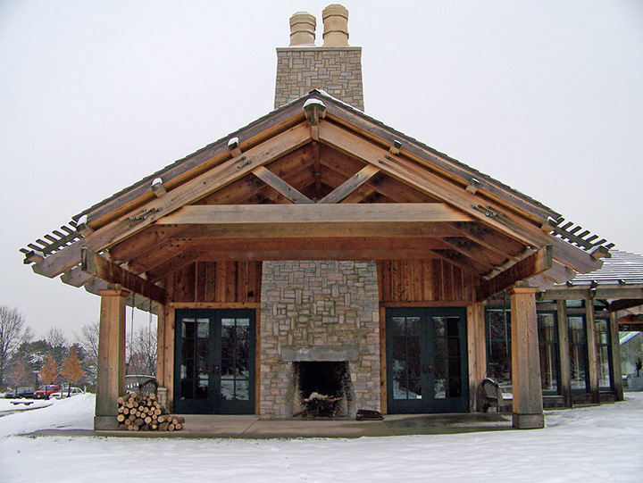

Founded in 1967 by the Helene Watermann, a prominent historian and patron of local artists, the Watermann Gallery is dedicated to advancing an appreciation of art and history in Green Valley. Watermann is not only the home for historical artifacts important to preserving the unique character of Green Valley, but also a place where visitors can experience exhibitions of fine art and participate in a variety of art and history-based programs.
Exhibitions and programs are all undertaken in an effort to provide the residents of Green Valley with a way of integrating art and history into their lives and taking away the lessons that these disciplines offer. By presenting quality exhibitions and programs, as well as committing to the proper care and preservation of works of art and artifacts relating to history and culture of Green Valley, the Watermann Gallery is the region’s center for art and historical engagement.

Collections and Exhibitions
Watermann Gallery houses a collection of contemporary and modern art in the areas of painting, sculpture, prints, drawings, photography, film, installations and new media. Rotating exhibitions feature local artists, as well as art that is permanently housed at the gallery. The gallery also hosts an Annual Juried All-Media Art Exhibition and Annual High School Student Exhibition.
In addition, the museum has a vast collection of Native American, historic artifacts, and geologic specimens from Green Valley and its surrounding areas. Many of these items are on permanent display within the museum, while others make up some of the history-themed rotating exhibits showcased throughout the year.